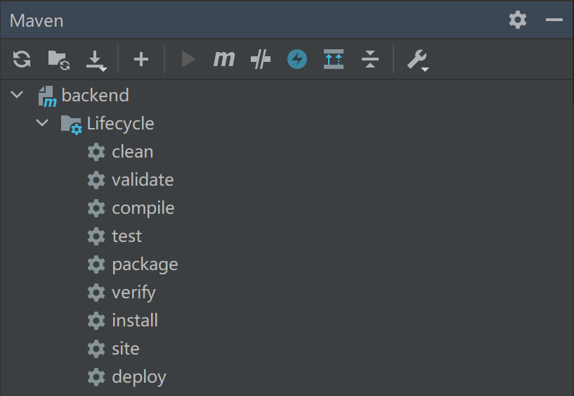
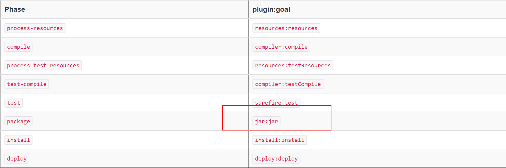

1 跟着官方文档学Maven构建生命周期¶

在IntelliJ IDEA中，显示了Maven的Lifecycle：

只需要学习这些命令，就能构建一个Maven项目。
三个内置生命周期¶
Maven内置了三个生命周期：clean、default和site。生命周期是由多个顺序执行的阶段组成，它们的关系和说明如下：
default¶
主要生命周期，用来构建应用。
validate 验证项目正确，必要信息有效
initialize 初始化构建状态，比如设置属性或创建目录
generate-sources 生成编译的源代码
process-sources 处理源代码，比如过滤任意值
generate-resources 生成包中的资源文件
process-resources 复制和处理资源文件到目标目录，为打开做准备
compile 编译项目的源码
process-classes 后处理（post-process）编译源代码生成的文件，比如给Java class文件做bytecode enhancement
generate-test-sources 生成编译的测试代码
process-test-sources 处理测试代码，比如过滤任意值
generate-test-resources 创建测试需要的资源
process-test-resources 复制和处理资源文件到测试目录
test-compile 编译测试代码到测试目录
process-test-classes 后处理（post-process）编译测试代码生成的文件，比如给Java class文件做bytecode enhancement
test 使用单元测试框架（如JUnit）执行测试，这些测试不能依赖已经打包（packaged）或部署（deployed）的代码
prepare-package 打包前准备，一般会生成处理过的未打包的前置版本包
package 将编译后的代码进行打包，比如jar包、war包
pre-integration-test 集成测试前置阶段，比如创建环境
integration-test 集成测试，在环境中进行测试
post-integration-test 集成测试后置阶段，比如清理环境
verify 验证包有效且质量达标
install 安装包到本地仓库，以便于本地项目依赖
deploy 复制包到远程仓库，共享给其他人使用
命令行执行¶
Maven提供了一个mvn命令，把它的路径（如D:\Program Files\JetBrains\IntelliJ IDEA 2020.3.3\plugins\maven\lib\maven3\bin）添加到环境变量就能直接使用。
mvn verify如果不知道执行什么命令，可以执行这条命令，它会把前置命令都执行了：validate，compile，test，package。同时也会执行代码检查比如checkstyle，以及集成测试。mvn clean deploy常用来清理构建部署到仓库，如果项目有多个子模块，Maven会遍历所有模块执行。
对于pre-*, post-*,
process-*等短横线命名的阶段则不能使用命令行直接执行，它们主要用来生成中间结果。比如单元测试覆盖率工具Jacoco和执行容器插件Docker可能会绑定到pre-integration-test来准备集成测试环境，然后在post-integration-test来收集覆盖率统计或者销毁容器。Failsafe和Code
coverage插件绑定到了integration-test和verify两个阶段，在verify执行后生成测试报告。如果执行verify是没有问题的，但是如果直接执行integration-test，就可能导致无法生成测试报告，甚至集成测试环境也没有被彻底清理。
IntelliJ IDEA集成了所有没有短横线命名的这些可以直接执行的命令。
Plugin Goals¶
Maven除了生命周期的阶段，还提供了一个更精细的任务，叫做插件目标（Plugin Goals）。示例：
mvn clean dependency:copy-dependencies package
dependency:copy-dependencies就是一个插件目标，表达式为plugin:goal。
其实阶段都是由插件目标组成的，Maven默认进行了绑定，比如clean:clean、compiler:compile、deploy:deploy等。package阶段打包类型不同插件目标也有区别：jar:jar、war:war。
一个典型的打jar包的阶段和插件目标如下图所示：

Plugin¶
Plugin是用来给Maven提供goals的，比如Compiler
plugin包括2个goals：compile用来编译main源代码，testCompile用来编译测试代码。Plugin在pom.xml中进行配置，比如：
<project xmlns="http://maven.apache.org/POM/4.0.0"
xmlns:xsi="http://www.w3.org/2001/XMLSchema-instance"
xsi:schemaLocation="http://maven.apache.org/POM/4.0.0
http://maven.apache.org/xsd/maven-4.0.0.xsd">
<modelVersion>4.0.0</modelVersion>
<groupId>com.companyname.projectgroup</groupId>
<artifactId>project</artifactId>
<version>1.0</version>
<build>
<plugins>
<plugin>
<groupId>org.apache.maven.plugins</groupId>
<artifactId>maven-antrun-plugin</artifactId>
<version>1.1</version>
<executions>
<execution>
<id>id.validate</id>
<phase>validate</phase>
<goals>
<goal>run</goal>
</goals>
<configuration>
<tasks>
<echo>validate phase</echo>
</tasks>
</configuration>
</execution>
<execution>
<id>id.compile</id>
<phase>compile</phase>
<goals>
<goal>run</goal>
</goals>
<configuration>
<tasks>
<echo>compile phase</echo>
</tasks>
</configuration>
</execution>
<execution>
<id>id.test</id>
<phase>test</phase>
<goals>
<goal>run</goal>
</goals>
<configuration>
<tasks>
<echo>test phase</echo>
</tasks>
</configuration>
</execution>
<execution>
<id>id.package</id>
<phase>package</phase>
<goals>
<goal>run</goal>
</goals>
<configuration>
<tasks>
<echo>package phase</echo>
</tasks>
</configuration>
</execution>
<execution>
<id>id.deploy</id>
<phase>deploy</phase>
<goals>
<goal>run</goal>
</goals>
<configuration>
<tasks>
<echo>deploy phase</echo>
</tasks>
</configuration>
</execution>
</executions>
</plugin>
</plugins>
</build>
</project>
多个goals按配置的先后顺序运行。executions用来对goals进行配置，也可以添加id进行标识。
小结¶
本文介绍了Maven内置的三个生命周期，生命周期是由多个阶段组成，IntelliJ IDEA集成了所有没有短横线命名的这些可以直接执行的阶段。阶段是由阶段目标（Plugin Goals）构成的，在pom.xml中进行配置。pom.xml是Maven一个很重要很常用的文件。